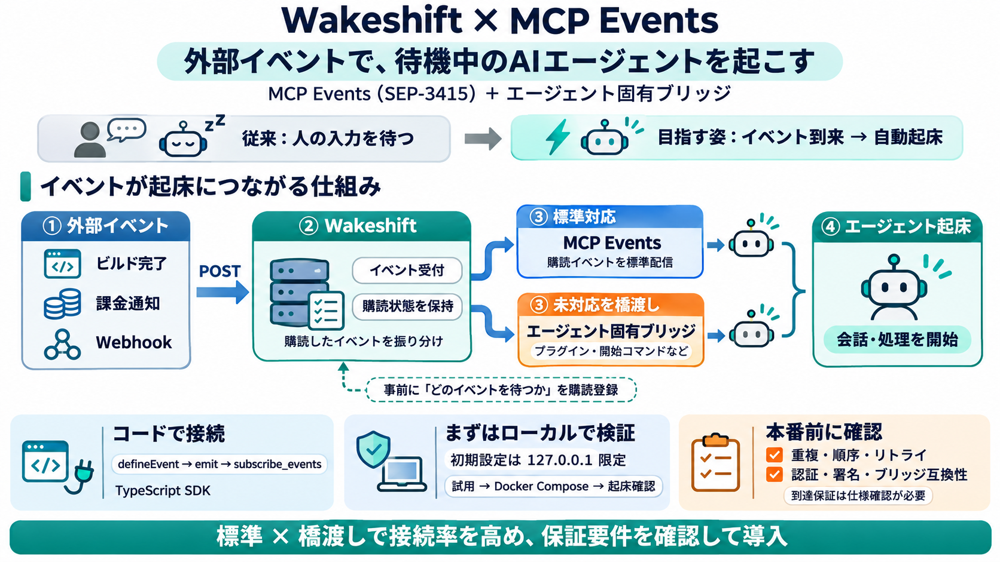

What It Takes to Add MCP Events to Your MCP Server
Advertise event support and implement events/list, events/subscribe and events/unsubscribe on your authenticated MCP end…

イベントで起こす
Wakeshift は「MCP Events（SEP-3415）」と「エージェント固有ブリッジ」を使い、ビルド完了やWebhookなどのevents（イベント／出来事）が来たタイミングで、待機中のAIエージェントを起動します。
待機がボトルネック
多くのAIエージェントはユーザー入力を待つ設計で、CI・課金・Webhookのような外部イベントと自然につながりません。結果として「人が手で起こす」運用になりがちです。
プロンプト待ち中心。外部のevent（イベント）をトリガにできない。
外部イベント到来 → エージェントが待機から起動し、会話が開始される。
目覚まし時計
Wakeshift は「publish URL へのPOST」という合図を受け、購読しているエージェントへ“起床通知”を配ります。標準対応ならMCP Events経由、非対応ならブリッジ経由で同じ目的に到達します。
POST / publish
MCP Events / Bridge
待機中のエージェントが起動（会話が起動される）。
標準と救済の二層
MCP Events（SEP-3415）に対応するクライアントには、Wakeshift が標準に沿って購読したイベントを配信します。対応していないクライアントには、エージェント固有ブリッジで同等の起床体験を狙います。
標準対応（MCP Events）＋非対応救済（ブリッジ）で、起床の接続率を上げる。
購読状態を保持
Wakeshift は「各クライアントの購読状態」をサーバ側で保持し、webhook / poll / stream などの経路でイベントを届けます。入口は publish URL、配信先は購読済みのエージェントです。
MCP Events クライアントが「どのイベントを待つか」を登録。
GitHub・Stripe・CIなどがWakeshiftのURLへPOST → 該当イベントを発火。
既存統合がそのまま使える
Webhooks を起点にすることで、既存の通知網（GitHub webhook、Stripeのイベント、CI通知）をWakeshiftへそのまま接続できます。開発者は個別ハンドラの総当たりを避けられます。
GitHub / Stripe / CI
WAKESHIFT publish URL
購読しているエージェントが起動。
未対応でも起こす
MCP Eventsを“まだ”理解しないエージェントでも、READMEではプラグインや開始コマンドなどの方法で起こせると説明されています。つまり、起床の経路はエージェントごとに用意されます。
Claude Code / Codex / Cursor 系
同じ「イベント発火」から、各エージェントの“起動手段”へ変換する。
define → emit → subscribe
TypeScript の @wakeshift/sdk を使うと、イベント定義（defineEvent）→発火（emit / publish URL作成）→購読（subscribe_events）へ接続できます。サンプルにより、アイドル状態からの起床を検証できます。
defineEvent → emit / createPublishUrl → subscribe_events
※どのエージェントがどのようにセッションを作るか（新規/既存）は方式依存で、厳密仕様は追加確認が必要です。
誤公開を避ける
セルフホストの初期設定は外部公開されにくく、初期では 127.0.0.1 限定で誤公開リスクを抑える設計になっています。公開環境は docs/self-hosting.md を見て、認証や設定を確認します。
127.0.0.1 のみ（ローカル限定）
docs/self-hosting.md で認証・署名・プロキシ等を確認
“保証範囲”は要確認
Wakeshiftの価値は高い一方、READMEだけでは「少なくとも一度/ちょうど一度」「順序保証」「重複時の扱い」「失敗時のリトライ整合性」など、運用要件の到達保証が明確でない可能性があります。
重複・順序・遅延・遅延の許容
エージェント更新でブリッジが追従できるか
docs/mcp-events.md / docs/harnesses.md で確認
導入の結論
Wakeshiftは「MCP Events（SEP-3415）」で標準配信を行いつつ、未対応エージェントにはブリッジで起床を成立させます。Webhookを入口にして統合コストを下げ、試用（apps/try）から検証→必要な保証要件を仕様確認するのが安全です。
試用 → Docker Compose 起動 → webhook → 起床確認
重複・順序・リトライ・認証/署名・エージェント起床経路
Advertise event support and implement events/list, events/subscribe and events/unsubscribe on your authenticated MCP end…
## はじめに Model Context Protocol（MCP）の公式ブログが、2026-07-28に仕様の大規模改定（通称「ステートレス化」）を正式リリースしたと発表しました。対象読者は、MCPサーバーやMCPクライアントをTyp…
> Microsoft Entra ID を使用した MCP 認証システムを、Frontend (Flask)、Backend (FastMCP)、Downstream API (Azure サービス) の3層構造で実現するサンプルを紹介。…
### 権限管理 データの閲覧範囲や編集権限を組織、部門、役職、役割に応じて柔軟に設定できます。これにより、必要最低限のアクセス権限を付与することで、情報漏洩リスクの軽減に繋がります。 ### IPアドレスでのアクセス制限 特…
- Author: @58_158_177_102 (moto_sato) - Posted: 2023-05-24T13:51:15+00:00 - Views: 15235 - Likes: 98 - Reposts: 20 - Rep…